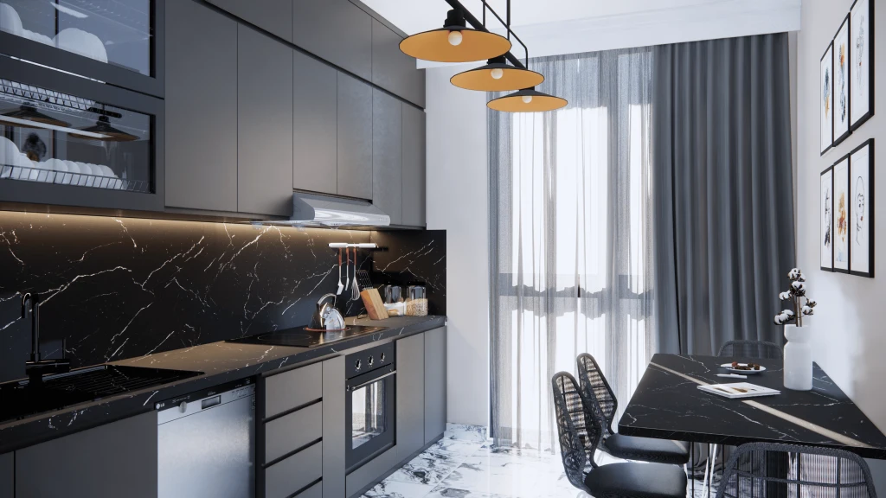

Hill Garden 216
A ten-block residential development in Çengelköy with 280 homes. Garden duplexes, roof duplexes and intermediate-floor apartments are arranged around green outdoor spaces.
Photo gallery

Official architectural illustrations; these images do not show the current construction condition.
Living spaces
The published social facilities include an outdoor pool, basketball court, children’s play area, fitness room, sauna, event spaces and landscaped gardens.
Çengelköy · Üsküdar · Istanbul
Bahçelievler Mahallesi, Yeşiltepe Caddesi, Çalışır Sokak No:1, Üsküdar. The official location presentation places the project near Çengelköy’s coastal neighbourhood and Istanbul’s bridge connections.
Choose your home
Request the current apartment selection, price and payment options. Compare the exact unit, view and included services before arranging your purchase.